March 2025: PhD success for Tom Richards-Hlabangana
Well done to Tom Richards-Hlabangana on passing his PhD viva with his thesis entitled ‘First Principles Modelling of Extended Defects in Materials for Energy Applications. Thanks to Prof Matt Watkins who was his external examiner.
February 2025: New funded EPSRC-JSPS collaborative project to investigate defects in reduced tungsten oxide
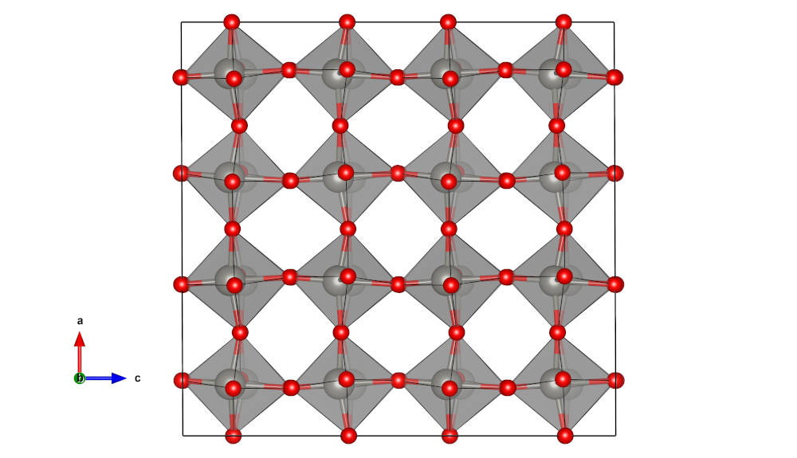We have received funding from EPSRC as part of a call for proposals on UK-Japan collaboration in advanced materials. The aim of this project entitled “Atomistic understanding of extended defects in reduced tungsten oxide to guide the optimisation of properties for energy applications” is to understand the atomic structure, electronic and thermal (phononic) properties of reduced tungsten oxides by combining first principles materials modelling methods with complementary scanning transmission electron microscopy (STEM). The project is a collaboration between the University of York, the group of Prof Ikuhara (University of Tokyo) who specialises in the application of scanning transmission electron microscopy (STEM) to understand crystal defects and the group of Prof Hiromichi Ohta (Hokkaido University) who grow high-quality thin-films of functional oxides for thermoelectric, electronic and electrochemical applications.
September 2024: Alex Armstrong passes PhD viva
Congratulations to Alex Armstrong on passing his PhD viva with his thesis entitled ‘Engineering the electronic structure of two dimensional chalcogenide materials’ co-supervised with Dr Christina Wang.
February 2024: Grain boundary structural relaxation in Sb2Se3 thin-film photovoltaics
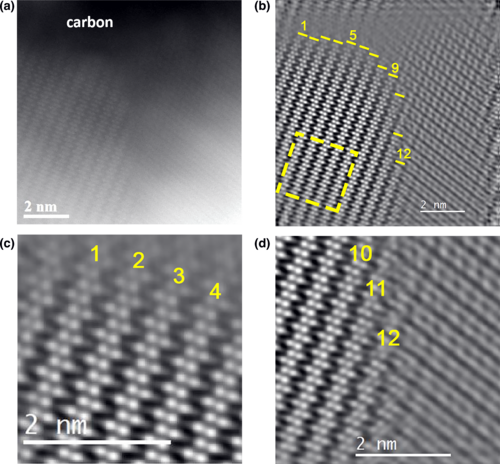In this paper resulting from an ongoing collaboration between the universities of Durham, Liverpool and York we investigate the strain fields associated with extended defects in Sb2Se3 using both scanning transmission electron microscopy and density functional theory calculations. We show long range strain is present near grain boundaries that break covalent bonds, consistent with DFT predictions of a structural reconstruction that eliminated deep electronic states in the gap. This suggests that Sb2Se3 naturally tolerates grain boundaries, a key requirement for achieving high efficiency thin-film photovoltaics.
This research was sponsored by EPSRC. The full Article is available on the Physical Review X Energy website..
January 2024: Grain boundaries in polycrystalline materials for energy applications: first principles modelling and electron microscopy
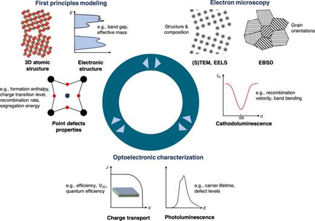In this review article we provide an introduction to key concepts and approaches for investigating grain boundaries using first principles materials modelling and electron microscopy methods. These techniques are powerful and highly complementary for investigating the atomic scale structure and properties of grain boundaries and understanding their impact on material performance. We also provide a number of case studies providing examples of their application to understand the impact of grain boundaries for a range of energy materials.
The full Article is available on the Applied Physics Reviews website.
July 2023: Atomistic understanding of the coherent interface between metal halide perovskite and lead iodide
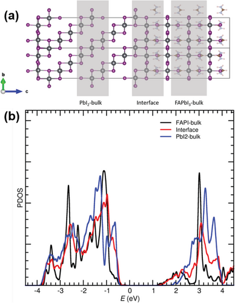Metal halide perovskite semiconductors including an excess of lead iodide n the thin films often exhibit improved solar cell performance. In a collaboration between the Universities of Oxford and York published we have resolved and understood the structure and electronic properties of interfaces between lead iodide domains and formamidinium lead iodide by combing scanning transmission electron microscopy and density functional theory calculations. We show that lead iodide phase that forms is a polytype that allows for a coherent interface to form which is benign for solar cell performance.
The research was sponsored by EPSRC. The full Article is available on the Advanced Materials Interfaces website.
May 2023: Small-Polaron Mediated Recombination in Titanium Dioxide from First Principles
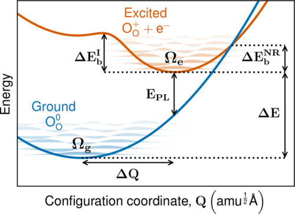Self-trapped hole polarons are known to form readily in anatase titanium dioxide, both in the bulk and at grain boundaries. In this first principles study published in Physical Review Research we investigate how trapped hole polarons can facilitate charge carrier recombination, for example following photoexcitation. We show that small hole polarons trapped at grain boundaries are predicted to have much higher nonradiative recombination rates, which can be attributed to softer phonon modes in the vicinity of the boundary as well as greater electron-phonon coupling. These findings have ramifications in materials other than titanium dioxide, and we propose strategies to reduce the degree of recombination that would occur at grain boundaries.
The research was sponsored by EPSRC. The full Article is available on the Physical Review Research website.
September 2022: Controlling the formation of conductive pathways in memristive devices
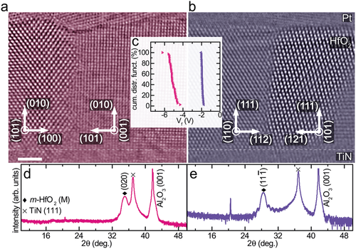In this collaborative study between the Technical University of Darmstadt and the University of York published in Advanced Science we combine scanning transmission electron microscopy, electrical characterisation and density functional theory calculations to understand how differences in atomic structure at grain boundaries influence how easily a conductive filament is formed on application of an electrical voltage across a textured polycrystalline hafnium dioxide film. By controlling the texture it is possible to reduce forming voltages which is beneficial for filamentary type memristive device applications.
The research was sponsored by EPSRC. The full Article is available on the Advanced Science website.
November 2021: Unveiling the Electronic Structure of Grain Boundaries in Anatase with Electron Microscopy and First-Principles Modelling
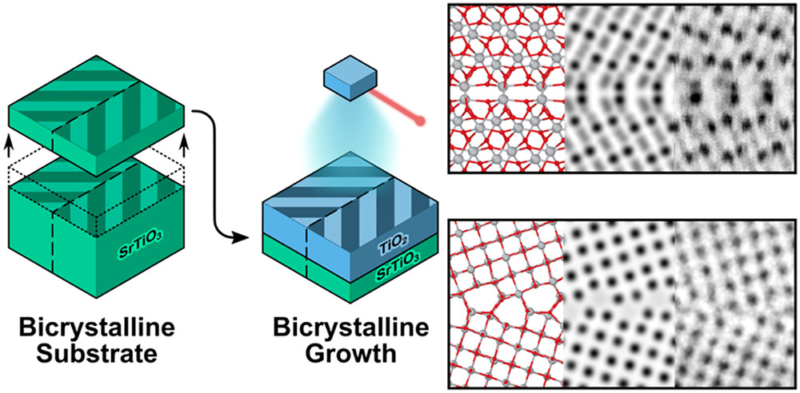In this collaboration between Hokkaido University, the University of Tokyo and the University of York published in Nano Letters we show how intrinsically oxygen deficient grain boundaries in anatase titanium dioxide can trap charge carriers. The study combined a novel approach to grow a anatase bi-crystal with scanning transmission electron microscopy and predictive modelling using density functional theory. We discuss strategies for the synthesis of polycrystalline anatase in order to minimise the formation of such deleterious grain boundaries.
The research was sponsored by EPSRC. The full Article is available on the Nano Letters website.
September 2021: PhD success for Adam Kerrigan
Congratulations to Adam Kerrigan on passing his PhD viva with his thesis entitled 'Thin-Film Polar-Oxides for Heterogeneous Catalysis'. Adam will continue working in the group as a research fellow to work on developing some python tools for grain boundary modelling.
April 2021: PhD success for James Quirk
Congratulations to James Quirk on passing his PhD viva with his thesis entitled ‘Optimising the Mobility of Nanoporous Titanium Dioxide’. James has will move on to a postdoctoral position at the University of Newcastle to work on modelling grain boundaries in battery materials.
March 2021: Localized anatase grain boundary phase embedded in rutile titanium dioxide
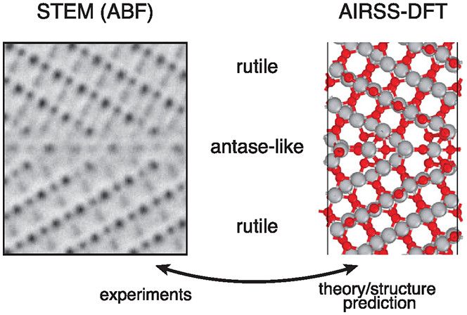The atomic structure of grain boundaries can sometimes be very challenging to predict. In this collaboration between the Tohoku University, the University of Tokyo, Cambridge University and the University of York published in Nano Letters we combine scanning transmission electron microscopy with ab into random structure searching to determine the atomic structure and electronic properties of a particularly complex grain boundary in rutile titanium dioxide. Unusually the grain boundary region has striking similarities to the bulk anatase crystal structure, suggesting a path to embed nanoscale anatase into rutile 2 and showcase how the atomic structure of even complex internal interfaces can be accurately determined using a combined theoretical and experimental approach.
The research was sponsored by EPSRC. The full Article is available on the Nano Letters website.
April 2020: Evidence for self-healing benign grain boundaries in Sb2Se3
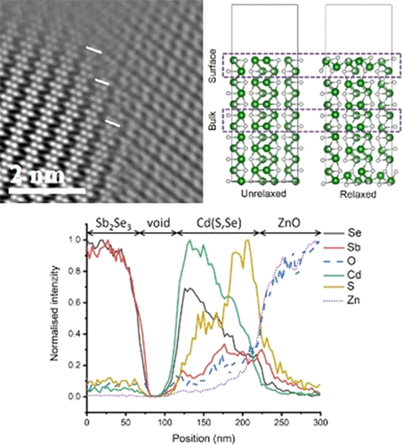In a collaboration involving researchers at the Universities of Durham Leeds, Liverpool and York we present a experimental and computational study into the structural and electronic properties of extended defects in Sb2Se3 - a promising material for thin-film photovoltaic devices. We show that, unusually, grain boundaries in Sb2Se3 are to associated with dangling bonds and therefore should exhibit reduced non-radiative recombination. We also show CdS is not a suitable emitter to partner Sb2Se3 due to Sb and Se interdiffusion.
The research was sponsored by EPSRC. The full Article is available on the ACS Applied Materials & Interfaces website.
February 2020: PhD success for Razak Elmaslmane
Congratulations to Razak Elmaslmane on passing his PhD viva with minor corrections. His thesis is entitled 'Localised electronic states in model systems and semiconductors' and his external examiner was Prof David Scanlon (University College London) and his internal examiner was Prof Matt Probert.
October 2019: Electronic Properties of 112 and 110 Twin Boundaries in Anatase TiO2
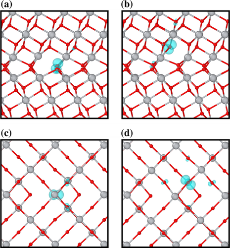In a paper published in Advanced Theory and Simulations we present a first principles investigation into the structure and electronic properties of twin boundaries in anatase titanium dioxide. {112} and {110} twins are found to be more favourable than the bulk for polaronic hole trapping (by up to 0.2 eV). However, neither boundary is found to favour electron trapping, indicating they are relatively benign to the performance of anatase as an n-type semiconductor.
The research was sponsored by EPSRC. The full Article is available on the Advanced Theory and Simulations website.
February 2019: Shih-Hsuan Hung passes his PhD viva
Congratulations to Shih-Hsuan Hung on passing his PhD viva with minor corrections. His thesis is entitled 'Shaping nanostructures using molecules' and his external examiner was Dr Matthew Watkins (University of Lincoln). Shih-Hsuan will soon start a postdoctoral position at the Institute for Solid State Physics at the University of Tokyo, Japan. We wish him the best in his new adventures.
November 2018: Exploring Titanium Dioxide Nanoparticles in Virtual Reality

The group exhibited our gresearch at YorNight 2018. Using a range of interactive demonstrations we explained our research on titanium dioxide nanoparticles and the use of computational modelling to predict properties and improve performance for applications. Participants were able to explore a selection of different nanoparticles in virtual reality and were tasked with finding the correct structure to match an experimental transmission electron microscopy image. The exhibit was attended by over 200 people.
This outreach activity was sponsored by EPSRC and the team presenting were Razak Elmaslmane, Keith McKenna, Chuanjia Tong and James Quirk.
February 2018: Cover of Journal of Applied Physics 'Structure, electronic properties, and oxygen incorporation/diffusion characteristics of the Sigma 5 TiN(310)[001] tilt grain boundary'
A recent paper published in the Journal of Applied Physics has been selected for the cover of volume 123 issue 7. The paper describes a first principles investigation of the structure, electronic properties, and oxygen incorporation/diffusion characteristics of the Sigma 5 TiN(310) tilt grain boundary with relevance to applications of polycrystalline TiN in microelectronics and protective coatings. We show that the grain boundary does not significantly modify electronic states near the Fermi energy but does induce an upward shift of up to 0.6 eV in a number of deeper occupied bands. We also show that oxygen is preferentially incorporated into the TiN grain boundary (GB) but must overcome relatively high activation energies for further diffusion. These predictions are consistent with the "stuffed barrier model" proposed to explain the good barrier characteristics of TiN. We also show that while the oxidizing power of TiN GBs is not sufficient to reduce HfO2 (a prototypical gate dielectric material), they can act as a scavenger for interstitial oxygen. Altogether, these results provide the much needed atomistic insights into the properties of a model GB in TiN and suggest a number of directions for future investigation.
The research was sponsored by EPSRC. The full Article is available free of charge to all on the Journal of Applied Physics website.
January 2018: New EPSRC-funded project on High-throughput screening of polycrystalline solar absorbers
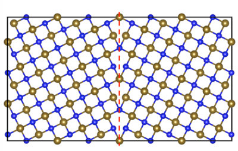We have received funding from EPSRC for a three-year project focussed on computational screening of polycrystalline solar absorber materials for next generation solar cells. The project will involve the application of density functional theory to investigate the structural, thermodynamic and electronic properties of grain boundary defects in promising solar absorber materials. The aims of the project are to quantify the impact of grain boundaries on material performance, and through high-throughput screening identify optimal materials for solar cell applications. We will work closely with experimental collaborators and our industrial partner (Dyesol) to validate theoretical models and test predictions in order to deliver improvement in solar cell performance.
January 2018: Crystal structure and anti-site boundary defect characterisation of Cu2ZnSnSe4
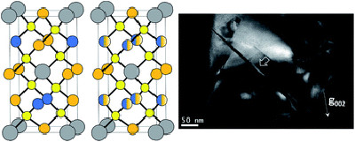In a recent paper published in the Journal of Materials Chemistry A we combine energy dispersive X-ray (EDX) techniques and first principles modelling to probe the structure and properties of anti-site boundaries in the photovoltaic material Cu2ZnSnSe4 (CZTSe). We demonstrate the 1/2[110](001) anti-site boundary is a very stable defect however it does act as a recombination site or current blocking layer, so that photovoltaic device performance is not significantly degraded.
The research was sponsored by EPSRC. The full Article is available on the Journal of Materials Chemistry A website.
July 2017: First-principles prediction of the morphology of L10 FePt nanoparticles supported on Mg(Ti)O for heat-assisted magnetic recording applications
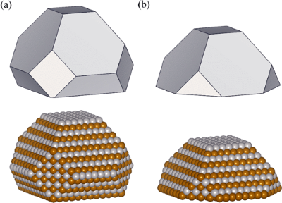In a recent paper published in Physical Review Materials we perform first-principles calculations to predict the morphology of FePt nanoparticles grown on Mg(Ti)O substrates with relevance to application in heat-assisted magnetic recording (HAMR) media. We show how incorporation of Ti into MgO substrates reduces the FePt adhesion energy due to the formation of strong Fe-Ti bonds at the interface. Consistent with experimental observations, the predicted equilibrium morphology of supported FePt nanoparticles is significantly changed, corresponding to increased wetting. This behaviour is undesirable for HAMR media since it promotes grain growth which limits the storage density. We show how passivation of surface Ti atoms (e.g., with MgO) is sufficient to restore the wetting observed for pure MgO substrates offering a viable strategy for optimisation of next generation recording media.
The research was sponsored by EPSRC. The full Article is available free of charge to all on the Physical Review Materials website.
June 2017: Psi-k workshop on Atomic scale materials microscopy: theory meets experiment
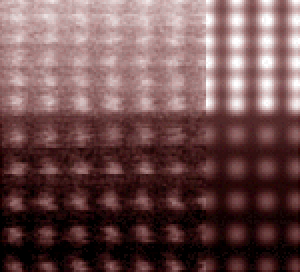The Psi-k workshop on "Atomic scale materials microscopy: theory meets experiment" was held between the 26th and 28th of June 2017 at the National Railway Museum in York (UK). The scientific focus was on the application and development of first principles methods that, in synergy with advanced microscopy techniques (e.g. TEM, EELS, STM, AFM), can help to unravel the structure and properties of materials at the atomic scale. Open to both experts and newcomers the aim was to provide a rounded overview of emerging methods and challenges in the field, and provide an opportunity for in-depth discussion and exchange of ideas.
Full details available on the workshop website.
April 2017: Atomic structure and electronic properties of MgO grain boundaries in tunnelling magnetoresistive devices
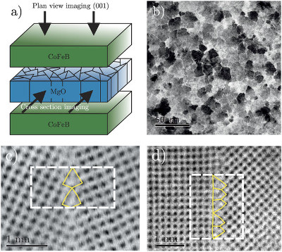Polycrystalline metal oxides find diverse applications in areas such as nanoelectronics, photovoltaics and catalysis. Although grain boundary defects are ubiquitous their structure and electronic properties are very poorly understood since it is extremely challenging to probe the structure of buried interfaces directly. In a recent paper published in Scientific Reports we combine novel plan-view high-resolution transmission electron microscopy and first principles calculations to provide atomic level understanding of the structure and properties of grain boundaries in the barrier layer of a magnetic tunnel junction. We show that the highly [001] textured MgO films contain numerous tilt grain boundaries. First principles calculations reveal how these grain boundaries are associated with locally reduced band gaps (by up to 3 eV). Using a simple model we show how shunting a proportion of the tunnelling current through grain boundaries imposes limits on the maximum magnetoresistance that can be achieved in devices.
The research was sponsored by EPSRC. The full Article is available free of charge to all on the Scientific Reports website.
March 2017: Workshop on Charge Trapping Defects in Semiconductors and Insulators
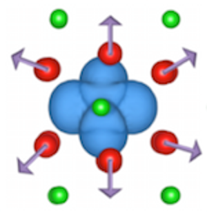A workshop on Workshop on Charge Trapping Defects in Semiconductors and Insulators organised by Keith McKenna was held on 20-21st March in York. The trapping of electrons and holes at defects in semiconductors and insulators is an important issue that controls the performance of materials for applications in areas such as photovoltaics, electronics and catalysis. Point defects such as vacancies or impurities as well as extended defects such as surfaces, grain boundaries and dislocations are all known to trap charge. Both theoretical (e.g. density functional theory) and experimental approaches (e.g. spectroscopic and scanning probe techniques) have been employed to characterise the electronic properties of defects however many open questions and challenges remain. This workshop brought together leading researchers to review the progress and challenges in understanding charge trapping at defects and highlight technological applications where it is critical for materials design and optimisation.
Full details available on the workshop website.
March 2017: New EPSRC-funded project on Optimisation of charge carrier mobility in nanoporous metal oxide films
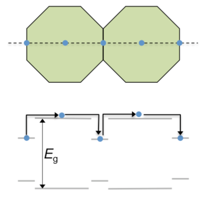A new three-year EPSRC-funded project aims to develop practical strategies to improve the mobility of nanoporous metal oxide films by reducing charge trapping at surface and interfaces. It will combine first principles theoretical modelling with structural, spectroscopic and photophysical materials characterisation, in order to understand charge trapping at an atomistic level and guide material modification strategies to improve mobility. Working closely with our industrial partners (Cristal and DyeSol) we will incorporate optimised nanoporous films in perovskite solar cell devices to demonstrate an improvement in efficiency.
Nov 2016: Modification of charge trapping at particle/particle interfaces by electrochemical hydrogen doping of nanocrystalline TiO2
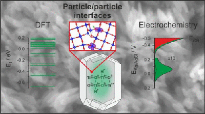Particle/particle interfaces play a crucial role in the functionality and performance of nanocrystalline materials such as mesoporous metal oxide electrodes. Defects at these interfaces are known to impede charge separation via slow-down of transport and increase of charge recombination, but can be passivated via electrochemical doping (i.e., incorporation of electron/proton pairs), leading to transient but large enhancement of photoelectrode performance. Although this process is technologically very relevant, it is still poorly understood. In a paper recently published in the Journal of the American Chemical Society we report on the electrochemical characterization and the theoretical modeling of electron traps in nanocrystalline rutile TiO2 films. Significant changes in the electrochemical response of porous films consisting of a random network of TiO2 particles are observed upon the electrochemical accumulation of electron/proton pairs. The reversible shift of a capacitive peak in the voltammetric profile of the electrode is assigned to an energetic modification of trap states at particle/particle interfaces. This hypothesis is supported by first-principles theoretical calculations on a TiO2 grain boundary, providing a simple model for particle/particle interfaces. In particular, it is shown how protons readily segregate to the grain boundary (being up to 0.6 eV more stable than in the TiO2 bulk), modifying its structure and electron-trapping properties. The presence of hydrogen at the grain boundary increases the average depth of traps while at the same time reducing their number compared to the undoped situation. This provides an explanation for the transient enhancement of the photoelectrocatalytic activity toward methanol photooxidation which is observed following electrochemical hydrogen doping of rutile TiO2 nanoparticle electrodes.
The research was sponsored by EPSRC. The full Article is available free of charge to all on the Journal of the American Chemical Society website.
May 2016: New book on Computational Modeling of Inorganic Nanomaterials
Computational Modeling of Inorganic Nanomaterials provides an accessible, unified introduction to a variety of methods for modeling inorganic materials as their dimensions approach the nanoscale. With contributions from a team of international experts, the book guides readers on choosing the most appropriate models and methods for studying the structure and properties (such as atomic structure, optical absorption and luminescence, and electrical and heat transport) of a varied range of inorganic nanomaterial systems.
Divided into three sections, the book first covers different types of inorganic nanosystems with increasing dimensionality. The second section explains how to computationally describe properties and phenomena associated with inorganic nanomaterials, including the modeling of melting and phase transitions, crystallization, and thermal, mechanical, optical, and excited state properties. The final section highlights a diverse range of important recent case studies of systems where modeling the properties and structures of inorganic nanomaterials is fundamental to their understanding. These case studies illustrate the use of computational techniques to model nanostructures in a range of applications and environments, from heterogeneous catalysis to astrochemistry. One of the case study chapters, "Interfaces in Nanocrystalline Oxide Materials: From Powders toward Ceramics" , was co-written by Keith McKenna and focusses on the modelling and characterisation of interfaces defect in oxide nanomaterials.
The chapter was written by Oliver Diwald (University of Salzburg), Keith McKenna (University of York) and Alexander Shluger (University College London) and is available to order from CRC Press.
March 2016: Atomic structure and interdiffusion in CoFeB/MgO/CoFeB magnetic tunnel junctions
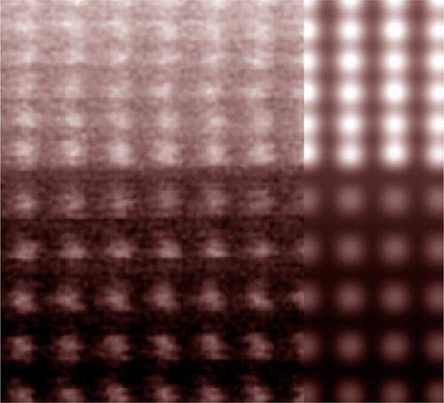CoFeB/MgO/CoFeB magnetic tunnel junctions (MTJs) are the functional element in magnetic read heads found in hard disks drives and are promising for applications in future nonvolatile memories and logic circuits. MTJs can be thought of as sandwich-like structures, with CoFeB as the bread and MgO as the filling (only a few nanometers thick). The functionality of MTJs arises from the strong dependence of their electrical resistance on the relative magnetisation of the adjacent CoFeB layers. In this paper we describe a combined electron microscopy and theoretical modelling study which resolves the atomic-scale structure of the MTJ with unprecedented chemical sensitivity. Using the combined techniques we demonstrate that on thermal annealing B diffuses out of CoFeB but does not enter the MgO layer. The remaining CoFe bonds atomically to the MgO grains forming an abrupt interface. These findings help resolve many previous contradictory claims about the atomic structure of MTJs and will help to develop high-performance spintronic devices by atomistic design.
The research was sponsored by EPSRC (EP/K003151). The full Article is available free of charge to all on the Nano Letters website.
February 2016: Atomic structure of twin growth defects in magnetite
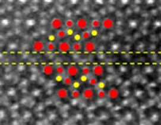Magnetite is the world's oldest known magnetic material. It continues to be the focus of scientific attention owing to its potential for applications in spintronics (e.g. advanced memory or logic devices). In this paper, we describe the structure and properties of a naturally forming type of defect in magnetite crystal: the (111) twin. By combining aberration corrected scanning transmission electron microscopy and spectroscopy the structure of the twin boundary is determined at the atomic level. The boundary is fully confined to the (111) growth plane and it is non-stoichiometric due to a missing plane of Fe atoms. First principles theoretical calculations further show that the local atomic structural configuration of the twin boundary does not significantly disrupt the magnetic structure of magnetite. This suggests (111) twin defects may be considered benign for spintronic applications, which as we have shown in previous work is not the case for all types of defect in magnetite.
The research was sponsored by EPSRC (EP/K003151). The full Article is available free of charge to all on the Scientific Reports website.
November 2015: First principles modelling of cation vacancy defects in hafnium dioxide
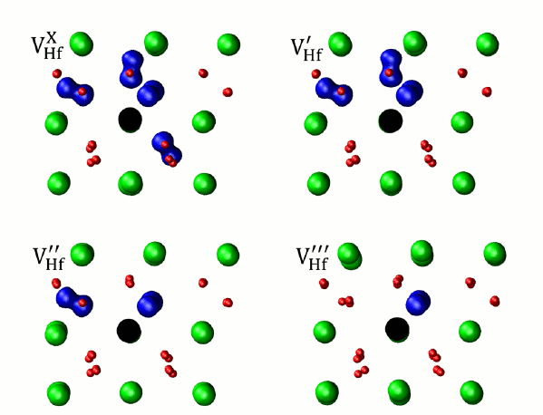Point defects in metal oxide materials control many of their intriguing electronic, magnetic and optical properties. By far the most well studied intrinsic point defect in oxides is the oxygen vacancy (i.e. a single missing oxygen ion in a crystal). First principles theoretical modelling has been invaluable in helping to understand the thermodynamic and spectroscopic properties of oxygen vacancies. On the other hand, cation vacancies have received far less attention, in part due to the fact that widely used theoretical approaches suffer from inaccuracies that make such defects challenging. In this paper we demonstrate the application of an highly accurate approach for predicting the properties of cation vacancies and apply it to study the oxide material HfO2. Our predictions concerning the stability, electronic and magnetic properties of the Hf vacancy in HfO2 provide much needed insight into its possible role in applications and will aid future experimental identification of these complex defects.
The research was sponsored by EPSRC (EP/K003151). The full Article is available free of charge to all on the Physical Review B website.
January 2015: Electron trapping on the surface of titanium dioxide nanocrystals
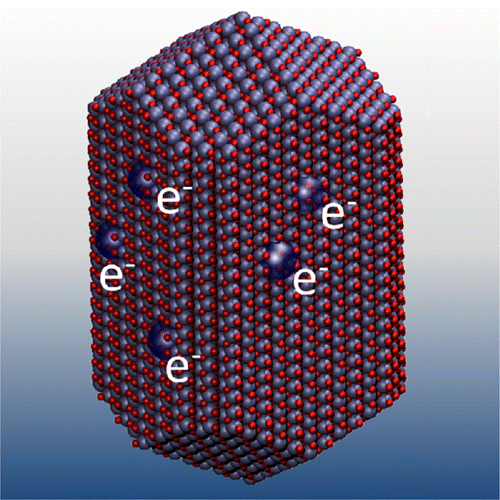The trapping of electrons at surfaces of nanocrystalline titanium dioxide can be decisive in controlling performance for diverse applications in photocatalysis, energy storage, and solar energy generation. Here, we employ first-principles calculations to elucidate the factors which influence electron trapping for all low index surfaces of rutile TiO2. We show that different surface orientations exhibit markedly different electron affinities: some preferring to trap electrons with others repelling electrons. We demonstrate that local variations in trapping energy are linked to variations in electrostatic potential and ion coordination providing atomistic insight into this effect. The equilibrium nanocrystal morphology exposes both electron-trapping and electron-repelling facets and therefore is predicted to possess highly anisotropic electron-trapping properties. We discuss how knowledge of surface-specific trapping properties can be utilized to design a number of nanocrystal morphologies which may offer improved performance for applications.
The research was sponsored by EPSRC (EP/K003151). The full Article is available free of charge to all on the Journal of Physical Chemistry C website.
December 2014: York scientists resolve spin puzzle
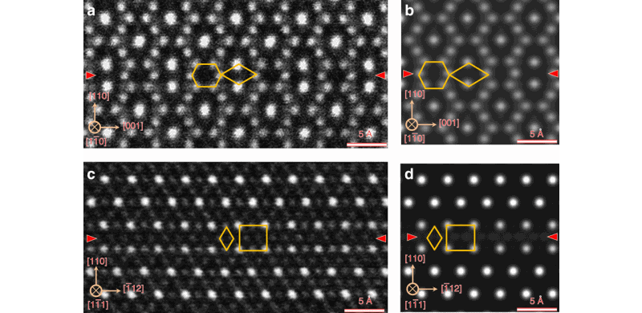Magnetite, one of the oldest known examples of a magnetic material, has many technological applications including in spintronics where it can be used to help develop more efficient and higher capacity memory devices. Electrical currents in magnetite are carried by electrons all with the same spin state which should allow scientists to maximise its spintronic capability. But efforts to do so have been hindered because magnetite fails to demonstrate the characteristics expected of 100 per cent spin polarized material. It is thought this is due to defects in its atomic structure but direct information on the structure and properties of such defects has proved challenging to obtain.
But now scientists in the Department of Physics at York, working with colleagues at Tohoku University in Japan, have for the first time resolved the atomic-scale structure of the two-dimensional antiphase boundary defects (APBs) in the material. The research, which was supported by the Engineering and Physical Sciences Research Council (EPSRC), is published in Nature Communications. The research team used theoretical modelling to predict the structure of the defects through a series of first principles calculations based on quantum mechanics. They then confirmed it experimentally using high-resolution transmission electron microscopy. The researchers found that APB defects are unusually stable and cause antiferromagnetic coupling leading to reduced spin polarization.
The research was sponsored by EPSRC (EP/K003151). The full Article is available free of charge to all on the Nature Communicataions website.
April 2014: Electron trapping at interfaces in nanocrystalline titanium dioxide
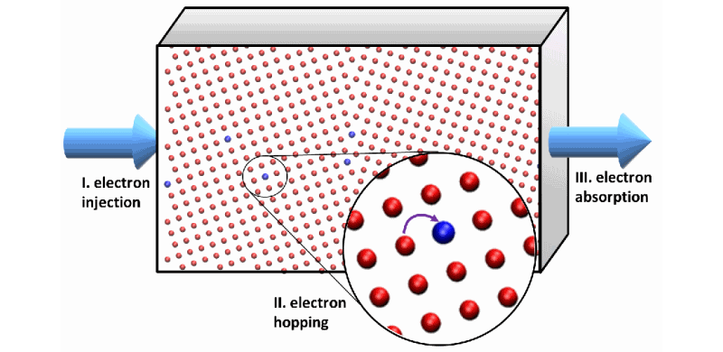Nanocrystalline materials formed of nanometre sized metal oxide particles (or nanoparticles) find numerous technological applications in areas such as solar energy generation, catalysis, gas sensing and nanoelectronics. Such nanocrystalline materials naturally contain many interfaces between nanoparticles which are though to impact on functionality but probing their effects directly has proved extremely challenging. Here, we show through quantum mechnanical modelling that electrons (which can be generated, for example, by the absorption of sunlight in solar cell applications) are readily trapped by interfaces in titanium dioxide. We show that perturbations in electrostatic potential near the interface are responsible for this electron trapping making interfaces an obstacle to electron transport through the nanocrystalline material. However, we also show that this effect can be partially ameliorated at high electron current densities pointing to ways to help improve the performance of materials for applications. These theoretical results provide atomistic insight into electron trapping at grain boundaries in a technologically important nanocrystalline material and point to ways in which the performance of materials may be improved for applications such as dye-sensitized solar cells and photocatalysts.
The research was sponsored by EPSRC (EP/K003151). The full Article is available free of charge to all on the Advanced Materials Interfaces website.
January 2014: Dislocation core polymorphism
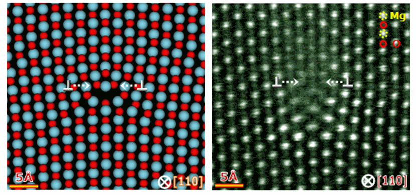Dislocation defects together with their associated strain fields and segregated impurities are of considerable significance in many areas of materials science. However, their atomic-scale structures have remained extremely challenging to resolve, limiting our understanding of these ubiquitous defects. Here, by developing a complex modelling approach in combination with bicrystal experiments and systematic atomic-resolution imaging, we are now able to pinpoint individual dislocation cores at the atomic scale, leading to the discovery that even simple magnesium oxide can exhibit polymorphism of core structures for a given dislocation species. These polymorphic cores are associated with local variations in strain fields, segregation of defects, and electronic states, adding a new dimension to understanding the properties of dislocations in real materials. The findings advance our fundamental understanding of basic behaviours of dislocations and demonstrate that quantitative prediction and characterization of dislocations in real materials is possible.
The research was sponsored by EPSRC (EP/K003151) and JSPS. The full Article is available on the Nature Communications website.
November 2013: Intriguing properties of surface terminated dislocations
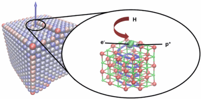Dislocations represent an important and ubiquitous class of topological defect found at the surfaces of metal oxide materials. They are thought to influence processes as diverse as crystal growth, corrosion, charge trapping, luminescence, molecular adsorption, and catalytic activity; however, their electronic and chemical properties remain poorly understood. In an Article recently published in the Journal of the American Chemical Society we describe a detailed first-principles based investigation into the properties of a surface-terminated screw dislocation in MgO to provide atomistic insight into these issues. We show that surface dislocations can exhibit intriguing electron trapping properties which are important for understanding the chemical and electronic characteristics of oxide surfaces. The results presented in this article taken together with recent experimental reports show that surface dislocations can be equally as important as more commonly considered surface defects, such as steps, kinks, and vacancies, but are now just beginning to be understood.
The research was sponsored by EPSRC (EP/K003151). The full Article is available free of charge to all on the Journal of the American Chemical Society website.
August 2012: Scientists' gold discovery sheds light on catalysis
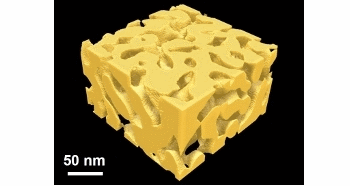An Article published in Nature Materials recently describes an important advance in establishing the catalytic properties of gold at the nano level. An international research team involving researchers from the UK, Japan, China and the USA have discovered that the catalytic activity of nanoporous gold (NPG) originates from high concentrations of surface defects present within its complex three-dimensional structure. The research has the potential to assist in the development of more efficient and durable catalytic converters and fuel cells because nanoporous gold is a catalytic agent for oxidising carbon monoxide.
Bulk gold - the sort used in watches and jewellery - is inert but nanoporous gold possesses high catalytic activity towards oxidation reactions. The research team discovered, that this activity can be identified with surface defects found within its complex nanoporous structure. While nanoporous gold exhibits comparable activity to nanoparticulate gold, it is considerably more stable making it attractive for the development of catalysts with high performance and long lifetimes. This work gives a greater understanding of the catalytic mechanisms of NPG which will, in turn, shed light on the mechanisms of gold catalysis more broadly.
This work was the result of a collaboration between researchers at The University of York, Tohoku University, Nagoya University, Johns Hopkins University and Shanghai Jiao Tong University. The research was sponsored by JST-PRESTO, JST-CREST and the Sekisui research fund. The full Article is available on-line at Nature Materials.
March 2012: Discovery of Two-dimensional Polaronic Behavior in the Binary Oxides m-HfO2 and m-ZrO2
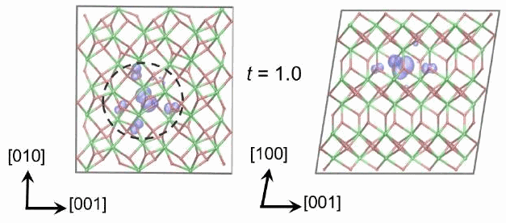Quasi-two-dimensional (2D) systems, including surfaces, heterointerfaces and layered materials, have become a rich playground for discovering exotic electronic effects such as high Tc-superconductivity and novel magnetic phases. The formation of polarons and the modification of their properties by reduced dimensionality have been implicated in many of these phenomena, but directly probing their properties experimentally remains extremely challenging.
In a recent Letter published in Physical Review Letters, we show how first principles methods that are free from the usual self interaction problems inherent to density functional theory can be used to investigate the properties of hole polarons in the binary monoclinic oxides HfO2 and ZrO2. Although usually considered as 3D materials, our calculations show that they exhibit pronounced 2D polaronic properties. This unexpected effect is due to an asymmetry in the crystal structure of these materials, which induces small polaron formation in only one of its two oxygen sub-lattices, leading to highly anisotropic polaron conductivity. These results demonstrate how a small asymmetry in the lattice structure can determine the qualitative character of polaron localization and significantly broaden the realm of quasi-2D polaron systems.
This work was the result of a collaboration between researchers at The University of York (Keith McKenna), University College London (Matthew Wolf and Alex Shluger) and the National Renewable Energy Laboratory (Stephan Lany and Alex Zunger). The full Letter is available on-line at Physical Review Letters.
January 2012: New book on Oxide Ultrathin Films
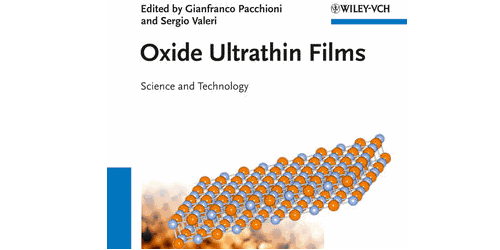A new book published by Wiley focusses on the science and technology of oxide ultrathin films. Edited by Gianfranco Pacchioni and Sergio Valeri, it contains a wealth of information in one accessible book. Written by international experts from multidisciplinary fields, this in-depth exploration of oxide ultrathin films covers all aspects of these systems, starting with preparation and characterisation, and going on to geometrical and electronic structure, as well as applications in current and future systems and devices. One of the chapters, "Silica and High-k Dielectric Thin Films in Microelectronics" , was co-written by Keith McKenna and focusses on the importance of defects in oxide films for the performance and reliability of microelectronic devices.
The chapter was written by Gennadi Bersuker (SEMATECH), Keith McKenna (University of York) and Alexander Shluger (University College London) and is available to order from Wiley.
November 2011: Complexity of grain boundaries in ceramics: electrons reveal it all
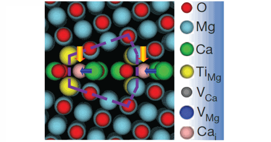Reporting in Nature, a team of researchers from the UK and Japan describe how, by combining advanced electron microscopy techniques with theoretical simulations, they have been able to unravel the structure of grain boundary defects in ceramics with both atomic resolution and chemical sensitivity. Their findings shed new light onto these universally important defects and demonstrate that their structure can be much more complex than is often assumed.
Most solid materials, both those formed naturally and those fabricated for technological applications, are polycrystalline. In other words, they consist of a complex arrangement of grains within which atoms form a highly ordered structure. Grain boundaries are the extended defects formed at the interfaces between these grains, and they play a crucial role in determining the mechanical and electrical properties of materials. For this reason, there has been a great deal of scientific research directed towards understanding their atomic structure.
The research team constructed a single grain boundary in the ceramic material magnesium oxide by precisely orienting and bonding two crystals together. The resulting bi-crystal was then characterized using a range of advanced electron microscopy techniques complemented by theoretical simulations. The use of high energy electrons to probe the structure of the materials allows for spatial resolution, down to the scale of atoms (of the order ten billionths of a centimeter). Combined with theoretical modeling, these techniques revealed the chemical identities of all atoms inside the boundary which form complex and ordered defect superstructure involving calcium and titanium impurities and atomic vacancy defects (see Figure). These results offer new insights into the complex interactions between defects and grain boundaries in ceramics and demonstrate that atomic-scale analysis of complex multicomponent structures in materials is now becoming possible.
The full Letter "Atom-resolved imaging of ordered defect superstructures at individual grain boundaries" is available on-line at Nature.